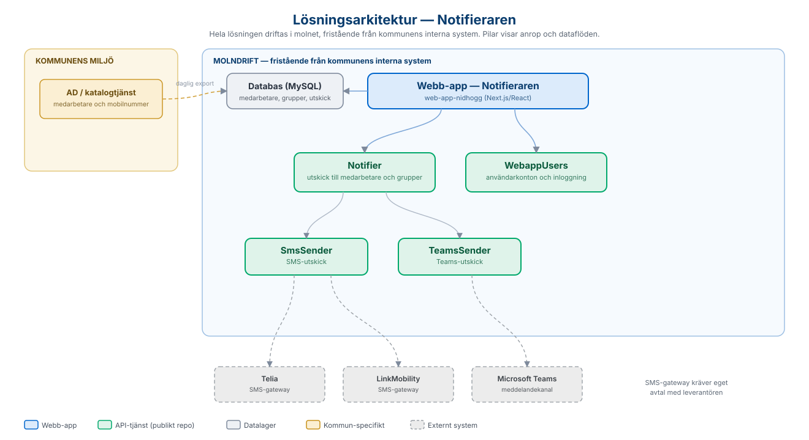

Här samlar vi länkar till de öppna källkodsrepon på GitHub som tillsammans bygger upp
helhetslösningen, samt de tjänster som lösningen integrerar med.
Webb-appen
Webb-appen ligger i ett repo med kodnamnet Nidhogg. Observera att repots README bara
beskriver den tekniska uppsättningen - att applikationen är Notifieraren framgår inte
av repot. Själva applikationen ligger i katalogen client/.
Applikation - Next.js/React (TypeScript) byggd med Sundsvalls kommuns
designsystem (komponentbiblioteket @sk-web-gui) och Tailwind CSS. Gränssnittet
innehåller vyer för att skapa utskick, hantera egna mottagargrupper och administration,
med flerspråksstöd via next-intl. Inloggning och behörighetskontroll sker i appens
middleware med JWT.
Egen databas - Till skillnad från flera andra tjänster på kommuna.se har
lösningen en egen fristående databas (MySQL, via Prisma). Där lagras medarbetare med
mobilnummer och organisationstillhörighet (speglade från AD-exporten), egna
mottagargrupper samt skickade meddelanden med leveransstatus per mottagare. Det är en
förutsättning för att lösningen ska fungera även när kommunens interna system ligger nere.
Drift - Hela lösningen paketeras med Docker och driftas i molnet,
fristående från kommunens interna miljö. Tester körs med Cypress.
Lösningsarkitektur
Översikt över hur webb-appen, databasen och de underliggande tjänsterna hänger ihop.
Pilarna visar anrop och dataflöden. Bilden är härledd från webb-appens kod och konfiguration
samt respektive tjänsts beskrivning.

Lösningsarkitektur — från webb-app via utskickstjänster till SMS-gateway, med egen databas för molndrift.
Tjänster som lösningen integrerar med
Webb-appen anropar två underliggande tjänster: Notifier, som hanterar själva
utskicken, och WebappUsers, som hanterar användarkonton och inloggning.
Notifier skickar i sin tur meddelandena vidare via utskickstjänsterna SmsSender och
TeamsSender. Samtliga finns som öppna repon på Sundsvalls kommuns GitHub och är byggda i
Java/Spring Boot.
Tjänst
Typ
Beskrivning
Källkod
Notifier
Kärntjänst
Navet för utskicken - tar emot notifieringar och skickar dem till medarbetare, enskilt eller via grupper, genom underliggande utskickstjänster.
Skickar SMS via externa SMS-gatewayer. Stödjer Telia och LinkMobility, som kan aktiveras och prioriteras via konfiguration - eget avtal med leverantören krävs.
Följande delar är beroende av den egna kommunens miljö och har därför inget publikt repo.
För att få dessa på plats krävs en utvecklingsinsats anpassad efter kommunens källsystem.
Del
Beskrivning
AD-export
Daglig export av medarbetare, mobilnummer och organisationstillhörighet från kommunens katalogtjänst (AD) till lösningens databas. Håller mottagardata aktuell utan manuell hantering.